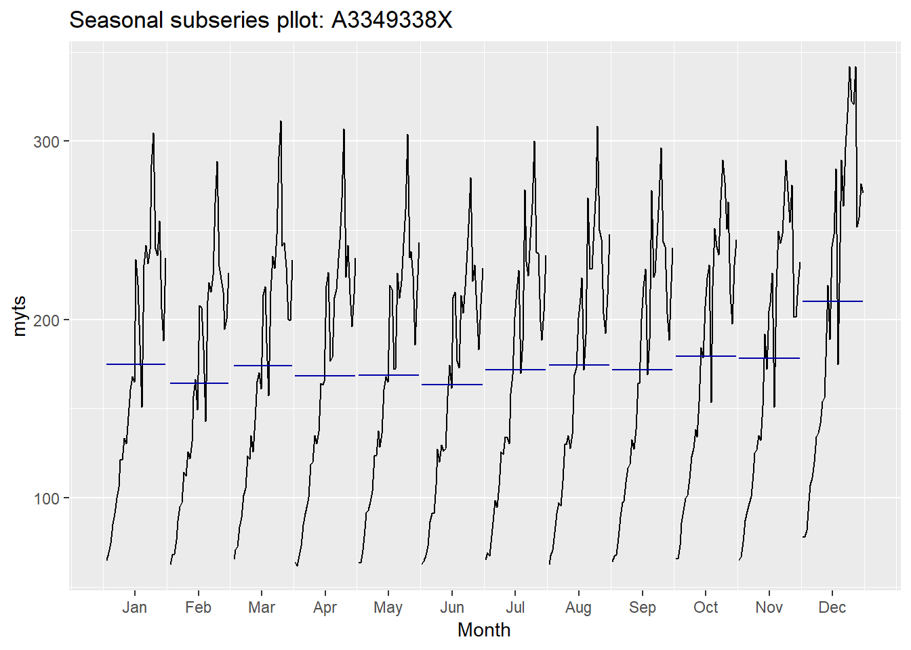
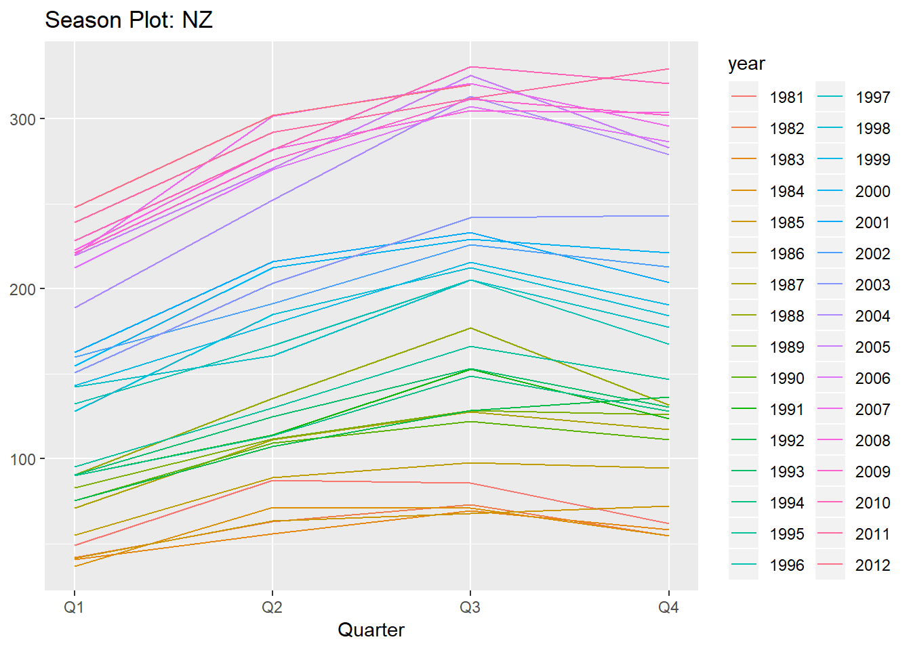
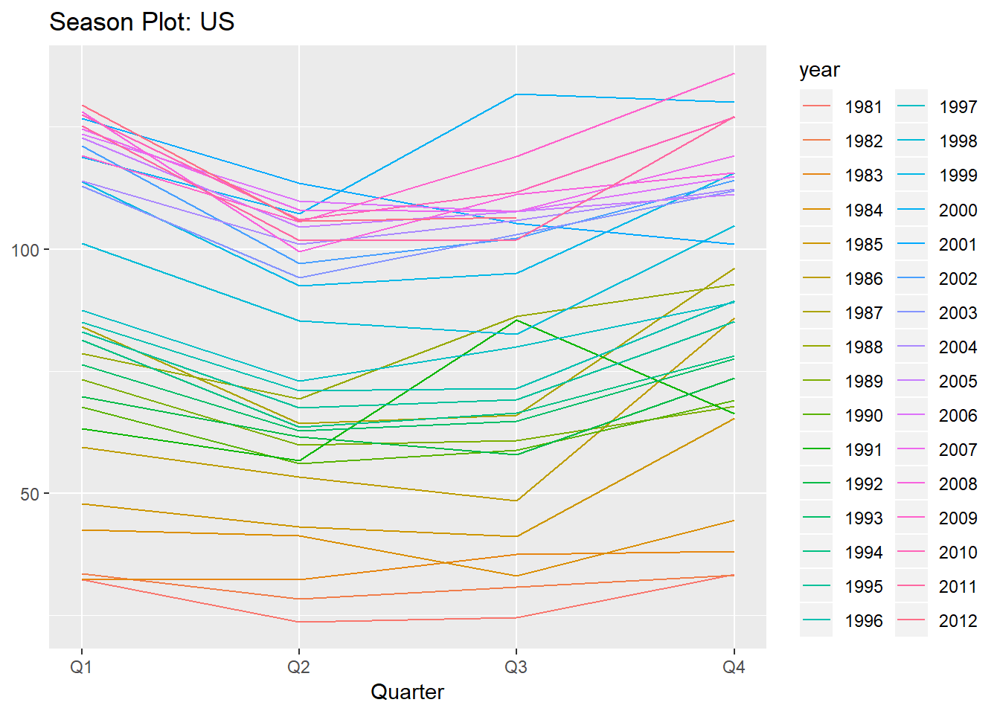
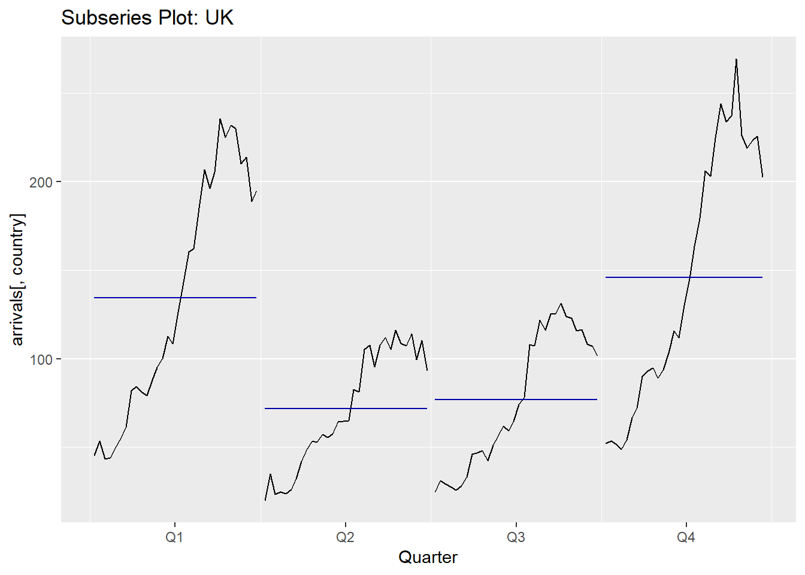

Chapter 2 HW1
2.1 2.3

2.1.1 a

retailData <- readxl::read_excel('./week1/retail.xlsx', skip=1)2.1.2 b

myts <- ts(retailData[, "A3349338X"],
frequency = 12,
start=c(1982,4))2.1.3 c

autoplot(myts[, "A3349338X"]) +
ggtitle("Time Series Plot A3349338X") +
xlab("Year") +
ylab("Value")
From the time series plot, we able to deduce: * Trend: there is a clear upward trend over the duration of the time series
ggseasonplot(myts, year.labels = T) +
ggtitle("Seasonal plot: A3349338X")
ggsubseriesplot(myts) +
ggtitle("Seasonal subseries pllot: A3349338X")
From the seasonal plot, we are able to deduce: * Seasonality: there is some clear seasonality that exists among different month, however it is not without minor variation/deviation between the years * December shows a clear uptick while February shows a clear downtick
ggAcf(myts)
From the Acf plot, we are able to confirm: * Trend: the autocorrelations are slowly decreasing as the lags are increasing
Conclusion: * Trend exists in this time series and is slowly going upwrd * Seasonality appears to exist however there are years that defy seasonality patterns * There does not appear to be any cyclic behavior
2.2 2.7

#arrivals <- data("arrivals")autoplot(arrivals) +
ggtitle("Arrivals Time Series") +
facet_wrap(~series)
Observations: * Japan seems to experience a an upward trend, reach an apex, and then experience a downward trend * NZ, UK, and US all experience upward trends in arrivals albeit to different degrees * UK appears to have the greatest variance in their arrival figures * US has very little deviation in their arrival trend * NZ has more fluctuation than US, but less than UK in their arrivals * US on average has the lowest amount of arrivals
genSeasonPlot <- function(country) {
ggseasonplot(arrivals[, country]) +
ggtitle(glue("Season Plot: {country}"))
}
countries <- c("Japan", "NZ", "US", "UK")
countries %>%
map(~ genSeasonPlot(.x))## [[1]]
##
## [[2]]
##
## [[3]]
##
## [[4]]
Observations from Seasonal Plots: * Typically the countries will see their highest arrivals in Q3, however the UK appears to go against this seasonal pattern * Q2 appears to be a down quarter for all countries except NZ * Q1 is a low point for NZ, and generally a high point for the other countries
genSubSeasonPlot <- function(country) {
ggsubseriesplot(arrivals[, country]) +
ggtitle(glue("Subseries Plot: {country}"))
}
countries %>%
map(~ genSubSeasonPlot(.x))## [[1]]
##
## [[2]]
##
## [[3]]
##
## [[4]]
Observations: * Japan’s mean stays relatively flat across the quarters outside of Q2 * US also remains relatively consistent and further backs up the lack of deviation point made earlier * UK experiences the most arrivals in Q1 and A4
2.3 2.10

data("dj")
ddj <- diff(dj)autoplot(ddj)
The autoplot appears to show random variation with peaks and valleys
ggAcf(ddj)
The changes in the Dow Jones Index do appear to be white noise as the the autocorrelations are very close to zero
2.4 3.1

2.4.1 usnetelec
data("usnetelec")
lambda <- BoxCox.lambda(usnetelec) %>%
print()## [1] 0.5167714autoplot(BoxCox(usnetelec, lambda))
2.4.2 usgdp
data("usgdp")
lambda <- BoxCox.lambda(usgdp) %>%
print()## [1] 0.366352autoplot(BoxCox(usgdp, lambda))
2.4.3 mcopper
data("mcopper")
lambda <- BoxCox.lambda(mcopper) %>%
print()## [1] 0.1919047autoplot(BoxCox(mcopper, lambda))
2.4.4 enplanements
data("enplanements")
lambda <- BoxCox.lambda(enplanements) %>%
print()## [1] -0.2269461autoplot(BoxCox(enplanements, lambda))
2.5 3.8

2.5.1 a

myts.train <- window(myts, end=c(2010,12))
myts.test <- window(myts, start=2011)2.5.2 b

autoplot(myts) +
autolayer(myts.train, series="Training") +
autolayer(myts.test, series="Test")
The autoplot shows that the data has been correctly split with the latter part of the data reservered for testing
2.5.3 c

fc <- snaive(myts.train)
print(fc)## Point Forecast Lo 80 Hi 80 Lo 95 Hi 95
## Jan 2011 255.4 219.8378 290.9622 201.0123 309.7877
## Feb 2011 215.5 179.9378 251.0622 161.1123 269.8877
## Mar 2011 229.6 194.0378 265.1622 175.2123 283.9877
## Apr 2011 214.4 178.8378 249.9622 160.0123 268.7877
## May 2011 224.5 188.9378 260.0622 170.1123 278.8877
## Jun 2011 205.6 170.0378 241.1622 151.2123 259.9877
## Jul 2011 198.7 163.1378 234.2622 144.3123 253.0877
## Aug 2011 203.3 167.7378 238.8622 148.9123 257.6877
## Sep 2011 203.2 167.6378 238.7622 148.8123 257.5877
## Oct 2011 214.4 178.8378 249.9622 160.0123 268.7877
## Nov 2011 201.4 165.8378 236.9622 147.0123 255.7877
## Dec 2011 251.8 216.2378 287.3622 197.4123 306.1877
## Jan 2012 255.4 205.1074 305.6926 178.4841 332.3159
## Feb 2012 215.5 165.2074 265.7926 138.5841 292.4159
## Mar 2012 229.6 179.3074 279.8926 152.6841 306.5159
## Apr 2012 214.4 164.1074 264.6926 137.4841 291.3159
## May 2012 224.5 174.2074 274.7926 147.5841 301.4159
## Jun 2012 205.6 155.3074 255.8926 128.6841 282.5159
## Jul 2012 198.7 148.4074 248.9926 121.7841 275.6159
## Aug 2012 203.3 153.0074 253.5926 126.3841 280.2159
## Sep 2012 203.2 152.9074 253.4926 126.2841 280.1159
## Oct 2012 214.4 164.1074 264.6926 137.4841 291.3159
## Nov 2012 201.4 151.1074 251.6926 124.4841 278.3159
## Dec 2012 251.8 201.5074 302.0926 174.8841 328.71592.5.4 d

accuracy(fc, myts.test)## ME RMSE MAE MPE MAPE MASE
## Training set 5.502402 27.74935 19.33784 3.369450 10.447161 1.000000
## Test set -10.845833 24.12202 18.52083 -5.910245 9.201624 0.957751
## ACF1 Theil's U
## Training set 0.8703252 NA
## Test set 0.3564215 0.9855325Conclusions: * The MASE shows that the seasonal naive method does produce a better forecast than the average naive forecast although very slightly. The MASE is only .95 * The MAPE shows that there is about a 9% error in the forecast on average which is not bad, but does show tht it could be improved * The RMSE and MAE both show that it is possible to improve the forecast but the seasonal naive forecast does do a decent job
2.5.5 e

checkresiduals(fc)
##
## Ljung-Box test
##
## data: Residuals from Seasonal naive method
## Q* = 1256.8, df = 24, p-value < 2.2e-16
##
## Model df: 0. Total lags used: 24The residual diagnostics show: * An approximately normal distribution * The mean of the residuals is close to 0 * The residual variance appears to be contant * The residuals appear to be correlated as the lags near to each other are similar in direction and size * Although the residuals pass the diagnostic tests, it does still show that the prediction intervals may be inaccurate * The Box-Ljung test does show a very small p-value which means the residuals are distinguishable from a white noise series. The Q* value is also very large
2.5.6 f

Accuracy measures are very sensitive to the training/test split. Forecasts by definition need historical data. The more information present to forecast on, the better the forecast